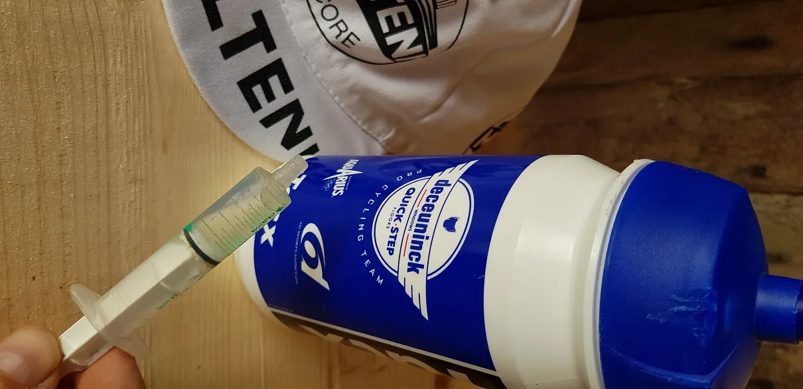

Ketoner til Kroppedal

Der skal mere end kildevand og hård træning til at vinde cykelløb– det er vist klart for de fleste. Intelligent taktik og vilje til at stikke i højre og venstre er én ting – marginal gains er en anden…
De derses Ketoner, der netop har været fremme i pressen – det er sgu det nye orange, udtaler Squadra Moltenis holdlæge, Finn Birk. Vi hørte om det allerede under Touren , da der tikkede en telex ind fra Kristian Blume nede i Annecy, fortsætter Finn. Kristian havde fået kylet en halvtom Deceuninck-Quick Step drikkedunk i favnen lige efter forplejningszonen på 5.etape. Da han et par dage senere trænede omkring Annecy, tog han før afgang et par slurke af dunken. Herefter kørte han op af Col de la Forclaz med næsten 30 i snit. Helt uhørt!
Dunken blev ved hjemkomst straks afleveret til Squadra Moltenis laboratorie for analyse og tallene taler for sig selv:

Ikke alene er Alaphillipes gule spyt fundet på tuden – indholdet er tæt på at være ligeså potent som vores Pot Belge tilsat et skvæt Bindeballe Bjesk, uddyber Finn. Desværre var der kun få milliliter tilbage i dunken, men de er opsamlet og skal nu podes på den lakridspibe, som vores Kroppedalfavorit, Mark Petersen indhalerer umiddelbart før løbet. Hvis effekten ellers ikke er fordampet, bliver det en ren formalitet for Mark at genvinde løbet, slutter Finn.